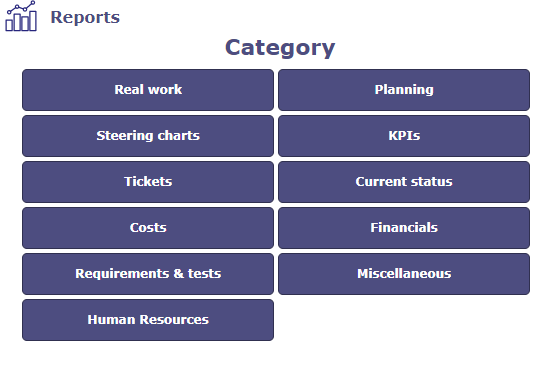
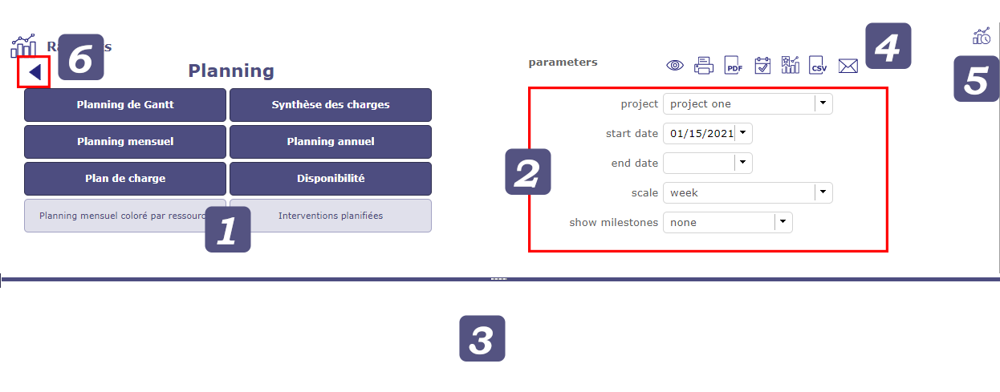
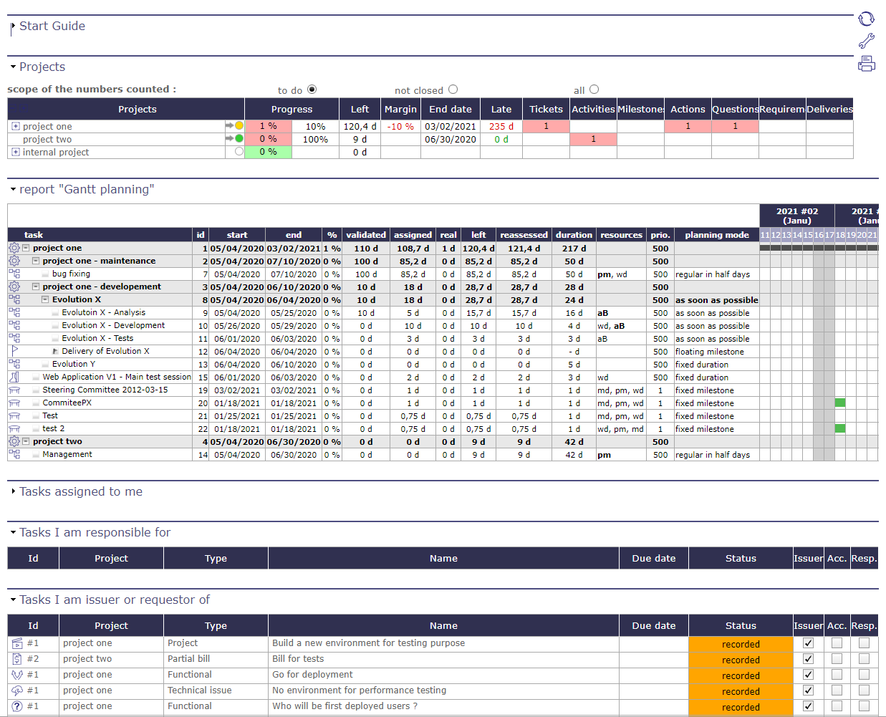
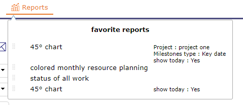
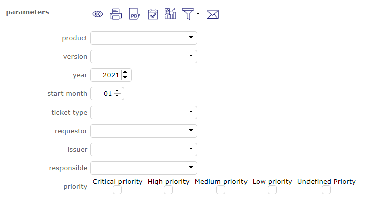
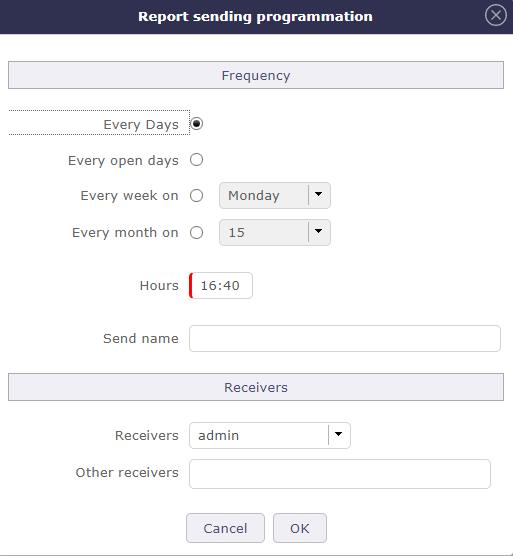
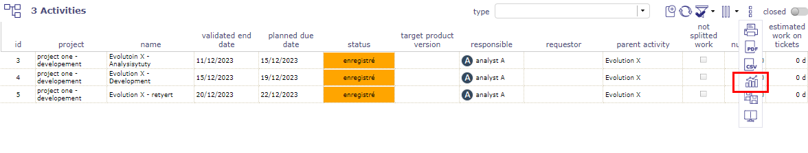
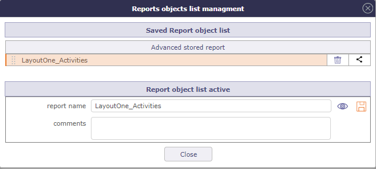
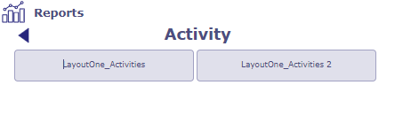
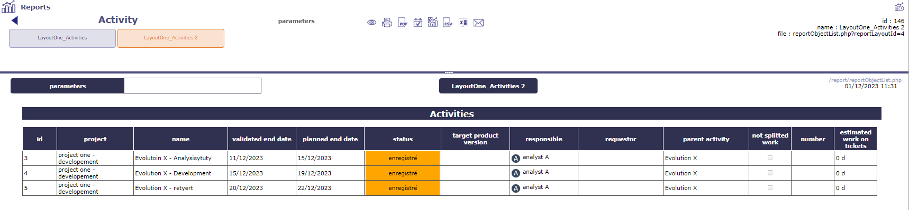

Rapports¶
Une liste de rapports est disponible dans différentes catégories. Elles-mêmes contiennent plusieurs sous-catégories.
Vous trouverez la page d’accueil des rapports dans le menu mais aussi toutes les catégories.
Celles-ci, directement accessibles, vous permettent de trouver le rapport de votre choix depuis le menu principal.

Vue des rapports¶

Sélectionnez une catégorie pour afficher les sous-catégories et sélectionner un rapport.
Les paramètres spécifiques à ce rapport sont affichés. Mettez à jour les paramètres pour obtenir les informations dont vous avez besoin.
Cliquez sur
 pour générer le rapport. Le rapport sélectionné apparaîtra sous le séparateur.
pour générer le rapport. Le rapport sélectionné apparaîtra sous le séparateur.Plusieurs outils sont disponibles pour exporter et envoyer vos rapports. Voir boutons.
Vous pouvez accéder à l’écran des rapports planifiés depuis l’écran des rapports.
Cliquez sur la flèche pour revenir à la liste des catégories.
Note
La position du curseur horizontal est enregistrée lors d’un changement manuel.
Cliquez sur
pour afficher le rapport.Cliquez sur
 pour obtenir une version imprimable du rapport.
pour obtenir une version imprimable du rapport.Cliquez sur
 pour exporter le rapport au format PDF.
pour exporter le rapport au format PDF.Cliquez sur
 pour afficher ce rapport sur l’écran Aujourd’hui.
pour afficher ce rapport sur l’écran Aujourd’hui.
Rapport de l’écran Aujourd’hui¶
Vous pouvez ajouter des rapports à votre écran d’accueil aujourd’hui.
Sélectionnez le rapport que vous souhaitez voir rapidement sur cet écran.
Cliquez sur le bouton
Sur l’écran Aujourd’hui, le rapport est affiché en bas de la page
Cliquez sur l’icône de paramètre sur l’écran aujourd’hui pour modifier l’emplacement du rapport
Note
Le rapport affiché est mis à jour automatiquement. Toute modification apportée au contenu de ce dernier est reflétée sur l’écran aujourd’hui.
Les rapports affichés sur l’écran aujourd’hui s’adaptent automatiquement à la taille de votre écran autant que possible. Si l’affichage ne peut plus s’adapter, un défilement horizontal vous permettra de lire l’intégralité du rapport

Afficher un rapport sur l’écran aujourd’hui¶
Cliquez sur le bouton de paramètre pour définir l’emplacement du ou des rapports sur l’écran Aujourd’hui.
Cliquez sur les poignées pour déplacer l’élément dans la liste.
Rapports favoris¶
Déplacez votre curseur sur l’icône du menu des rapports (dans la barre supérieure) pour afficher le menu contextuel contenant vos rapports favoris.

Vous pouvez ajouter un type de rapport « vide » aux favoris ou à un projet et des ressources spécifiques. Dans ce cas, à côté du nom du rapport, les éléments liés seront affichés.
Gestion du menu contextuel

{kind=link}
{kind=link}
{kind=link}
{kind=link}
Filtrer les rapports¶
Pour les tickets et uniquement les tickets, vous pouvez appliquer un filtre existant ou en créer un

Comme avec les filtres de la liste avancée, vous pouvez choisir parmi de nombreux critères pour créer votre filtre ;
Voir aussi
Programmation d’envoi de rapport¶
Possibilité de planifier l’envoi de rapports par e-mail
Par exemple, vous pouvez envoyer un rapport tous les jours, tous les lundis ou le premier jour de chaque mois

Envoi d’un rapport par e-mail¶
Pour voir tous les rapports planifiés pour l’envoi, allez dans Rapport planifié dans le menu Outils
Rapports à partir de listes¶
Lorsque vous êtes sur une liste d’éléments, tels que des activités, tickets, actions ou tout autre élément… vous pouvez créer des rapports à partir de votre mise en page de liste
Sur la liste
La fonction « enregistrer la liste d’objets comme rapport » est disponible dans les outils de la zone de liste.
{kind=link}

Liste comme rapport¶
Vous pouvez modifier les colonnes et les placer dans l’ordre souhaité, vous pouvez appliquer des filtres simples ou avancés.
Lorsque vous cliquez sur , une fenêtre contextuelle s’ouvre.

Fenêtre pour enregistrer la liste comme rapport¶
Nommez votre mise en page de liste et enregistrez-la en cliquant sur  .
.
La liste sera stockée telle que vous l’avez préparée et vous la trouverez dans les rapports.
Sur les rapports
Dans les rapports, vous trouverez une nouvelle catégorie où les différents rapports de liste que vous avez copiés jusqu’à présent seront copiés.
Ils sont triés par éléments, sachant que vous pouvez créer plusieurs rapports différents pour le même élément.

Fenêtre pour enregistrer la liste comme rapport¶
Vous obtiendrez alors le rapport tel que vous l’avez programmé à partir de la liste des éléments.
Chacun de ces rapports peut être ajouté à l’écran d’aujourd’hui, peut être envoyé à une fréquence donnée.
Ils peuvent être imprimés et exportés en PDF, CSV et Excel.

Fenêtre pour enregistrer la liste comme rapport¶
Liste complète des rapports¶
Travail réel¶
Vous permet de visualiser les dépenses réelles consommées par vos ressources sur un ou tous les projets sur une période donnée.
La plupart des rapports vous permettent de affiner l’affichage par organisation, par équipe et par ressource ou même par type d’activité.
les rapports pouvant être exportés au format Excel sont indiqués par l’icône
{kind=link}
TRAVAIL
Travail pour une ressource - Hebdomadaire
Travail pour une ressource - Mensuel
Travail pour une ressource - Annuel
Travail pour une ressource - Entre deux dates
Travail mensuel pour une ressource
Travail mensuel détaillé par ressource
TRAVAIL DÉTAILLÉ PAR ACTIVITÉ
TRAVAIL DÉTAILLÉ PAR RESSOURCE
SYNTHÈSE DU TRAVAIL PAR ACTIVITÉ
CHARGES INDIVIDUELLES PAR TYPE D’ACTIVITÉ
Travail pour une ressource par type d’activité - mensuel
Travail pour une ressource par type d’activité - Annuel
Travail pour une ressource par type d’activité - Entre deux dates
AUTRES
Planification¶
Les rapports de la catégorie planification vous permettent de suivre l’utilisation de vos ressources à travers vos plannings de projet.
Diagramme, synthèse, rapport coloré, plan de charges entre travail planifié et réel…
SYNTHÈSE DU TRAVAIL
Synthèse du travail par ticket
{kind=link}
PLANIFICATION MENSUELLE
Planification mensuelle ressource/projet
Planification mensuelle projet/ressource
Planification mensuelle projet/activité/ressource
Planification mensuelle ressource/projet/activité
Planification mensuelle pour une ressource
Planification mensuelle pour une ressource (par projet)
PLANIFICATION ANNUELLE
Planification annuelle ressource/projet
Planification annuelle projet/ressource
Planification globale projet/ressource par mois
PLAN DE CHARGE
Plan de charge par semaine
Plan de charge par mois
Plan de charge par ressource et par semaine
Plan de charge par ressource et par mois
Plan de charge sur une période donnée
DISPONIBILITÉ
Disponibilité mensuelle des ressources
Synthèse de disponibilité
Planification mensuelle des ressources en couleur
{kind=link}
AUTRES
Interventions planifiées
Diagrammes de pilotage¶
Les diagrammes de gestion sont des rapports très précis pour suivre, comparer et informer sur les coûts, les délais et l’avancement de vos projets.
KPIs¶
Suivez vos indicateurs KPI avec précision.
KPI DURÉE
KPI Durée pour le projet
KPI Durée consolidé
KPI CHARGE DE TRAVAIL
KPI Charge de travail pour le projet
KPI Charge de travail consolidé
KPI ENTRANT/LIVRABLE
KPI Livrable pour le projet
KPI Livrable consolidé
KPI Entrant pour le projet
KPI Entrant consolidé
AUTRES
Tickets¶
Trouvez ici tous les rapports concernant le suivi de vos tickets sur un ou plusieurs projets et cela, sur une période donnée.
Vous pouvez restreindre et filtrer votre affichage par ressource, par client, par demandeur, émetteur ou manager. Mais aussi par priorité ou qualification.
NOMBRE DE TICKETS
Rapport annuel pour les tickets
Rapport annuel pour les tickets par type
Rapport pour tickets cumulés - nombre de jours
Rapport annuel pour les tickets par produit
RAPPORT POUR TICKETS PAR QUALIFICATION
Rapport pour tickets par qualification - hebdomadaire
Rapport pour tickets par qualification - mensuel
Rapport pour tickets par qualification - annuel
Rapport pour tickets par qualification - global
RAPPORT RÉPARTITION
Rapport pour tickets ouverts - hebdomadaire
Rapport pour tickets ouverts - mensuel
Rapport pour tickets ouverts - annuel
Rapport pour tickets ouverts - global
SYNTHÈSE DES TICKETS PAR STATUT
AUTRES
Agile¶
Courbe Burndown des User Stories
Statut actuel¶
La catégorie statut actuel vous permet de suivre l’état des éléments relatifs au projet : Activités, tâches d’activité, risques, Approbation de documents…
RISQUES ET ACTIONS
AUTRES
Coûts¶
Vous pourrez suivre tous vos coûts liés au projet, à l’activité ou à vos ressources.
DÉPENSES
Dépense de projet par mois
Dépense individuelle par mois
Dépense totale par mois
AUTRES
Synthèse des coûts par activité
Coûts des ressources par mois
Coûts détaillés des ressources par activité par mois
Dépense et coût total par mois
Finances¶
De la même façon, vous pourrez suivre les recettes liées au projet et leur consolidation.
TERME DE FACTURATION CLIENT
Termes mensuels
Termes hebdomadaires
AUTRES
Exigences et Tests¶
Vous pourrez tracer le statut des cas exécutés pour les exigences et/ou produits, surveiller la couverture des exigences, consulter les annotations, commentaires et obtenir diverses synthèses.
COUVERTURE DES TESTS
couverture des tests des exigences
couverture des tests des produits
détail des cas de test
résumé de session de test
FLUX D’EXIGENCES
Flux des exigences annuel
Exigences cumulées sur nombre de jours
Exigences annuelles par type
EXIGENCES OUVERTES
Exigences ouvertes hebdomadaires
Exigences ouvertes mensuelles
Exigences ouvertes annuelles
Exigences ouvertes globales
AUTRES
Courbe Burn-Down des exigences
Exigences avec questions ouvertes
Divers¶
Un ensemble de rapports supplémentaires mais très complets sur vos projets et certains de leurs éléments.
HISTORIQUE
Détail de l’historique pour un élément
Éléments supprimés
AUTRES
Audit des connexions
Tableau de bord du projet
Éléments suivis
Liste des pièces jointes par utilisateur
Ressources Humaines¶
Un ensemble de rapports supplémentaires mais très complets sur vos projets et certains de leurs éléments.
Entrées - sorties des ressources
Effectif des ressources
Ancienneté des ressources